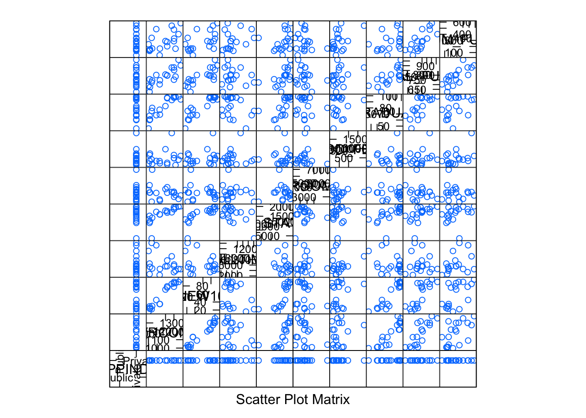
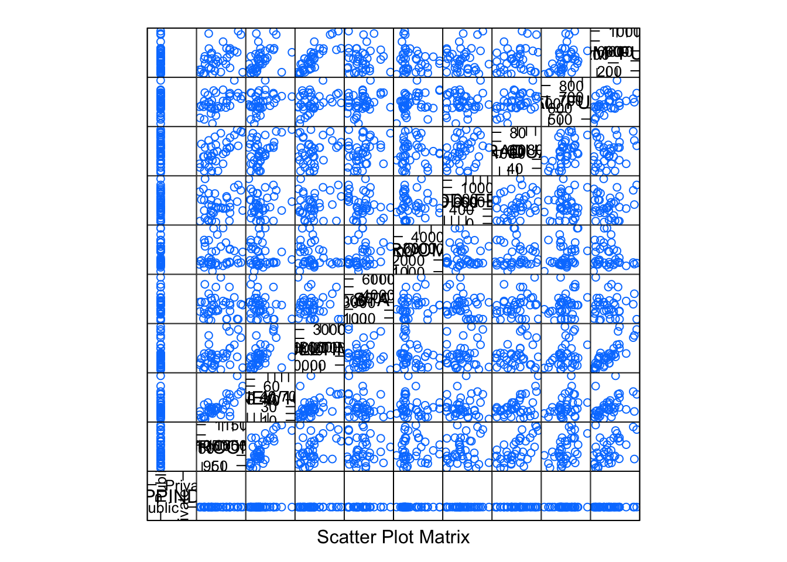

Task 2.2 (universities). Тураев Тимур.
## Loading required package: RColorBrewerЗагружаем данные, все как на паре:
df <- read.csv2(file = "data/I.csv")
df <- subset(df, select = c(PPIND, AVRCOMB, NEW10, FULLTIME, IN_STATE, ROOM, ADD_FEE, GRADUAT, SAL_FULL, NUM_FULL))
df$PPIND <- factor(df$PPIND, labels = c("Public", "Private"))
df <- na.exclude(df)
df.private <- subset(df, PPIND == "Private")
df.public <- subset(df, PPIND == "Public")Строим регрессию, прологарифмировав денежные данные, удалив отличников:
analysis <- function(dataframe) {
l <- lm(NEW10 ~ FULLTIME + log(IN_STATE) + log(ROOM) + log(ADD_FEE) + log(SAL_FULL) + GRADUAT + NUM_FULL, data = dataframe)
print(summary(l))
l.aic <- stepAIC(l)
# Попробуем выкинуть еще что-нибудь:
l.aic.room <- update(l.aic, . ~ . -log(ROOM))
l.aic.add_fee <- update(l.aic, . ~ . -log(ADD_FEE))
l.aic.add_fee.room <- update(l.aic, . ~ . -log(ADD_FEE) -log(ROOM))
anova(l.aic, l.aic.room, l.aic.add_fee, l.aic.add_fee.room)
#Больше ничего не выкинуть
l <- l.aic
print(summary(l))
}Проанализируем все частные университеты:
lm.private.full <- analysis(df.private)##
## Call:
## lm(formula = NEW10 ~ FULLTIME + log(IN_STATE) + log(ROOM) + log(ADD_FEE) +
## log(SAL_FULL) + GRADUAT + NUM_FULL, data = dataframe)
##
## Residuals:
## Min 1Q Median 3Q Max
## -11.450 -4.289 0.872 3.828 9.516
##
## Coefficients:
## Estimate Std. Error t value Pr(>|t|)
## (Intercept) -3.104e+02 2.510e+02 -1.237 0.24197
## FULLTIME 1.456e-03 9.640e-04 1.511 0.15909
## log(IN_STATE) 3.114e+01 7.805e+00 3.990 0.00212 **
## log(ROOM) -1.129e+01 8.338e+00 -1.354 0.20293
## log(ADD_FEE) 3.721e+00 3.231e+00 1.151 0.27401
## log(SAL_FULL) 2.594e+00 3.754e+01 0.069 0.94614
## GRADUAT 1.321e+00 1.911e-01 6.916 2.53e-05 ***
## NUM_FULL 1.242e-02 2.542e-02 0.488 0.63481
## ---
## Signif. codes: 0 '***' 0.001 '**' 0.01 '*' 0.05 '.' 0.1 ' ' 1
##
## Residual standard error: 8.068 on 11 degrees of freedom
## Multiple R-squared: 0.9537, Adjusted R-squared: 0.9242
## F-statistic: 32.36 on 7 and 11 DF, p-value: 1.748e-06
##
## Start: AIC=84.96
## NEW10 ~ FULLTIME + log(IN_STATE) + log(ROOM) + log(ADD_FEE) +
## log(SAL_FULL) + GRADUAT + NUM_FULL
##
## Df Sum of Sq RSS AIC
## - log(SAL_FULL) 1 0.31 716.3 82.965
## - NUM_FULL 1 15.53 731.6 83.364
## <none> 716.0 84.956
## - log(ADD_FEE) 1 86.29 802.3 85.118
## - log(ROOM) 1 119.32 835.3 85.885
## - FULLTIME 1 148.53 864.6 86.538
## - log(IN_STATE) 1 1036.55 1752.6 99.964
## - GRADUAT 1 3113.21 3829.2 114.814
##
## Step: AIC=82.96
## NEW10 ~ FULLTIME + log(IN_STATE) + log(ROOM) + log(ADD_FEE) +
## GRADUAT + NUM_FULL
##
## Df Sum of Sq RSS AIC
## - NUM_FULL 1 25.0 741.3 81.615
## <none> 716.3 82.965
## - log(ADD_FEE) 1 86.3 802.6 83.126
## - log(ROOM) 1 135.5 851.8 84.256
## - FULLTIME 1 149.7 866.1 84.571
## - log(IN_STATE) 1 1171.7 1888.0 99.378
## - GRADUAT 1 4394.3 5110.6 118.298
##
## Step: AIC=81.62
## NEW10 ~ FULLTIME + log(IN_STATE) + log(ROOM) + log(ADD_FEE) +
## GRADUAT
##
## Df Sum of Sq RSS AIC
## <none> 741.3 81.615
## - log(ROOM) 1 142.7 884.0 82.961
## - log(ADD_FEE) 1 204.9 946.2 84.252
## - FULLTIME 1 468.7 1210.0 88.924
## - log(IN_STATE) 1 1591.7 2333.0 101.399
## - GRADUAT 1 7049.2 7790.5 124.308
##
## Call:
## lm(formula = NEW10 ~ FULLTIME + log(IN_STATE) + log(ROOM) + log(ADD_FEE) +
## GRADUAT, data = dataframe)
##
## Residuals:
## Min 1Q Median 3Q Max
## -12.6392 -4.2624 0.3945 3.5180 12.4945
##
## Coefficients:
## Estimate Std. Error t value Pr(>|t|)
## (Intercept) -3.202e+02 7.651e+01 -4.185 0.001070 **
## FULLTIME 1.871e-03 6.525e-04 2.867 0.013222 *
## log(IN_STATE) 3.322e+01 6.287e+00 5.283 0.000148 ***
## log(ROOM) -1.175e+01 7.424e+00 -1.582 0.137628
## log(ADD_FEE) 4.810e+00 2.537e+00 1.896 0.080463 .
## GRADUAT 1.385e+00 1.246e-01 11.118 5.19e-08 ***
## ---
## Signif. codes: 0 '***' 0.001 '**' 0.01 '*' 0.05 '.' 0.1 ' ' 1
##
## Residual standard error: 7.551 on 13 degrees of freedom
## Multiple R-squared: 0.9521, Adjusted R-squared: 0.9336
## F-statistic: 51.63 on 5 and 13 DF, p-value: 4.043e-08Итог: поступают там где больше выпускаются (то же, что и для государственных) и там где больше платить: “раз нужно платить - то чего мелочиться”
Теперь удалим выбивающиеся университеты, из частных это University of Delawa, Fordham University, University of Pennsy. Из государственных College of William a. У них слишком высокие ADD_FEE и/или ROOM, IN_STATE
splom(~df.public)splom(~df.private)
df.private.cut <- df.private[!rownames(df.private) %in% c(129, 99, 25), ]
df.public.cut <- df.public[!rownames(df.public) %in% 152, ]
df.cut <- df[!rownames(df) %in% c(25, 99, 129, 152), ]
splom(~df.public.cut)
splom(~df.private.cut)lm.private.cut <- analysis(df.private.cut)##
## Call:
## lm(formula = NEW10 ~ FULLTIME + log(IN_STATE) + log(ROOM) + log(ADD_FEE) +
## log(SAL_FULL) + GRADUAT + NUM_FULL, data = dataframe)
##
## Residuals:
## Min 1Q Median 3Q Max
## -9.908 -2.295 -0.637 3.585 10.121
##
## Coefficients:
## Estimate Std. Error t value Pr(>|t|)
## (Intercept) -9.435e+02 6.159e+02 -1.532 0.1641
## FULLTIME 9.011e-04 1.044e-03 0.863 0.4132
## log(IN_STATE) 4.606e+01 3.269e+01 1.409 0.1965
## log(ROOM) 1.332e+01 1.595e+01 0.835 0.4278
## log(ADD_FEE) 3.065e+00 3.884e+00 0.789 0.4528
## log(SAL_FULL) 5.096e+01 4.888e+01 1.042 0.3277
## GRADUAT 1.067e+00 3.639e-01 2.933 0.0189 *
## NUM_FULL -9.151e-03 3.294e-02 -0.278 0.7882
## ---
## Signif. codes: 0 '***' 0.001 '**' 0.01 '*' 0.05 '.' 0.1 ' ' 1
##
## Residual standard error: 7.691 on 8 degrees of freedom
## Multiple R-squared: 0.9624, Adjusted R-squared: 0.9295
## F-statistic: 29.25 on 7 and 8 DF, p-value: 4.348e-05
##
## Start: AIC=70.19
## NEW10 ~ FULLTIME + log(IN_STATE) + log(ROOM) + log(ADD_FEE) +
## log(SAL_FULL) + GRADUAT + NUM_FULL
##
## Df Sum of Sq RSS AIC
## - NUM_FULL 1 4.56 477.72 68.343
## - log(ADD_FEE) 1 36.82 509.98 69.389
## - log(ROOM) 1 41.26 514.42 69.527
## - FULLTIME 1 44.05 517.21 69.614
## <none> 473.16 70.190
## - log(SAL_FULL) 1 64.28 537.44 70.228
## - log(IN_STATE) 1 117.41 590.57 71.736
## - GRADUAT 1 508.64 981.80 79.869
##
## Step: AIC=68.34
## NEW10 ~ FULLTIME + log(IN_STATE) + log(ROOM) + log(ADD_FEE) +
## log(SAL_FULL) + GRADUAT
##
## Df Sum of Sq RSS AIC
## - log(ADD_FEE) 1 32.27 510.00 67.389
## - log(ROOM) 1 38.68 516.41 67.589
## - FULLTIME 1 40.45 518.17 67.644
## <none> 477.72 68.343
## - log(SAL_FULL) 1 85.79 563.52 68.986
## - log(IN_STATE) 1 157.84 635.57 70.911
## - GRADUAT 1 783.26 1260.99 81.873
##
## Step: AIC=67.39
## NEW10 ~ FULLTIME + log(IN_STATE) + log(ROOM) + log(SAL_FULL) +
## GRADUAT
##
## Df Sum of Sq RSS AIC
## - FULLTIME 1 20.44 530.44 66.018
## - log(ROOM) 1 67.88 577.88 67.388
## <none> 510.00 67.389
## - log(IN_STATE) 1 153.23 663.23 69.592
## - log(SAL_FULL) 1 172.26 682.26 70.045
## - GRADUAT 1 755.65 1265.65 79.932
##
## Step: AIC=66.02
## NEW10 ~ log(IN_STATE) + log(ROOM) + log(SAL_FULL) + GRADUAT
##
## Df Sum of Sq RSS AIC
## <none> 530.44 66.018
## - log(ROOM) 1 132.52 662.96 67.586
## - log(IN_STATE) 1 202.23 732.67 69.186
## - log(SAL_FULL) 1 329.03 859.47 71.740
## - GRADUAT 1 974.21 1504.65 80.700
##
## Call:
## lm(formula = NEW10 ~ log(IN_STATE) + log(ROOM) + log(SAL_FULL) +
## GRADUAT, data = dataframe)
##
## Residuals:
## Min 1Q Median 3Q Max
## -12.4449 -3.4430 -0.2349 4.7250 8.2562
##
## Coefficients:
## Estimate Std. Error t value Pr(>|t|)
## (Intercept) -994.2793 263.7931 -3.769 0.003105 **
## log(IN_STATE) 43.4883 21.2358 2.048 0.065214 .
## log(ROOM) 17.4128 10.5039 1.658 0.125582
## log(SAL_FULL) 61.8775 23.6884 2.612 0.024165 *
## GRADUAT 0.9517 0.2117 4.495 0.000909 ***
## ---
## Signif. codes: 0 '***' 0.001 '**' 0.01 '*' 0.05 '.' 0.1 ' ' 1
##
## Residual standard error: 6.944 on 11 degrees of freedom
## Multiple R-squared: 0.9578, Adjusted R-squared: 0.9425
## F-statistic: 62.48 on 4 and 11 DF, p-value: 1.714e-07Вторая часть задания: построить модель для всех университетов, используя эффекты взаимодействия с фактором PPIND. Строим и выкидываем незначимое.
analysis2 <- function(dataframe) {
contrasts(dataframe$PPIND) <- contr.sum
print(contrasts(dataframe$PPIND))
lm <- lm(NEW10 ~ FULLTIME * PPIND + log(IN_STATE) * PPIND + log(ROOM) * PPIND + log(SAL_FULL) * PPIND + GRADUAT * PPIND, data = dataframe)
lm <- stepAIC(lm)
print(summary(lm))
}Сначала для всех университетов:
lm <- analysis2(df)## [,1]
## Public 1
## Private -1
## Start: AIC=284.94
## NEW10 ~ FULLTIME * PPIND + log(IN_STATE) * PPIND + log(ROOM) *
## PPIND + log(SAL_FULL) * PPIND + GRADUAT * PPIND
##
## Df Sum of Sq RSS AIC
## - PPIND:log(SAL_FULL) 1 1.08 4917.2 282.95
## - PPIND:log(ROOM) 1 26.77 4942.9 283.26
## - FULLTIME:PPIND 1 169.46 5085.6 284.94
## <none> 4916.1 284.94
## - PPIND:GRADUAT 1 720.25 5636.4 291.01
## - PPIND:log(IN_STATE) 1 1666.67 6582.8 300.17
##
## Step: AIC=282.95
## NEW10 ~ FULLTIME + PPIND + log(IN_STATE) + log(ROOM) + log(SAL_FULL) +
## GRADUAT + FULLTIME:PPIND + PPIND:log(IN_STATE) + PPIND:log(ROOM) +
## PPIND:GRADUAT
##
## Df Sum of Sq RSS AIC
## - PPIND:log(ROOM) 1 29.46 4946.7 281.31
## <none> 4917.2 282.95
## - FULLTIME:PPIND 1 237.12 5154.3 283.73
## - log(SAL_FULL) 1 249.00 5166.2 283.87
## - PPIND:GRADUAT 1 1294.39 6211.6 294.74
## - PPIND:log(IN_STATE) 1 2082.59 6999.8 301.79
##
## Step: AIC=281.31
## NEW10 ~ FULLTIME + PPIND + log(IN_STATE) + log(ROOM) + log(SAL_FULL) +
## GRADUAT + FULLTIME:PPIND + PPIND:log(IN_STATE) + PPIND:GRADUAT
##
## Df Sum of Sq RSS AIC
## <none> 4946.7 281.31
## - log(ROOM) 1 208.17 5154.8 281.74
## - FULLTIME:PPIND 1 237.78 5184.4 282.08
## - log(SAL_FULL) 1 327.22 5273.9 283.09
## - PPIND:GRADUAT 1 1359.58 6306.2 293.63
## - PPIND:log(IN_STATE) 1 2121.46 7068.1 300.36
##
## Call:
## lm(formula = NEW10 ~ FULLTIME + PPIND + log(IN_STATE) + log(ROOM) +
## log(SAL_FULL) + GRADUAT + FULLTIME:PPIND + PPIND:log(IN_STATE) +
## PPIND:GRADUAT, data = dataframe)
##
## Residuals:
## Min 1Q Median 3Q Max
## -22.0048 -5.7543 0.3727 4.8331 21.6720
##
## Coefficients:
## Estimate Std. Error t value Pr(>|t|)
## (Intercept) -2.622e+02 9.037e+01 -2.901 0.005555 **
## FULLTIME 9.196e-04 4.766e-04 1.929 0.059473 .
## PPIND1 2.084e+02 4.063e+01 5.130 4.95e-06 ***
## log(IN_STATE) 9.367e+00 4.431e+00 2.114 0.039637 *
## log(ROOM) -6.278e+00 4.372e+00 -1.436 0.157358
## log(SAL_FULL) 2.738e+01 1.521e+01 1.800 0.077960 .
## GRADUAT 9.272e-01 1.181e-01 7.850 3.24e-10 ***
## FULLTIME:PPIND1 -6.976e-04 4.545e-04 -1.535 0.131282
## PPIND1:log(IN_STATE) -1.979e+01 4.316e+00 -4.584 3.17e-05 ***
## PPIND1:GRADUAT -3.705e-01 1.010e-01 -3.670 0.000599 ***
## ---
## Signif. codes: 0 '***' 0.001 '**' 0.01 '*' 0.05 '.' 0.1 ' ' 1
##
## Residual standard error: 10.05 on 49 degrees of freedom
## Multiple R-squared: 0.8517, Adjusted R-squared: 0.8244
## F-statistic: 31.26 on 9 and 49 DF, p-value: < 2.2e-16Теперь для усеченных, с выброшенными выбивающимися:
lm <- analysis2(df.cut)## [,1]
## Public 1
## Private -1
## Start: AIC=258.26
## NEW10 ~ FULLTIME * PPIND + log(IN_STATE) * PPIND + log(ROOM) *
## PPIND + log(SAL_FULL) * PPIND + GRADUAT * PPIND
##
## Df Sum of Sq RSS AIC
## - FULLTIME:PPIND 1 0.248 3892.1 256.26
## - PPIND:log(SAL_FULL) 1 42.783 3934.6 256.86
## - PPIND:log(ROOM) 1 102.100 3993.9 257.69
## <none> 3891.8 258.26
## - PPIND:log(IN_STATE) 1 236.579 4128.4 259.51
## - PPIND:GRADUAT 1 239.521 4131.3 259.55
##
## Step: AIC=256.26
## NEW10 ~ FULLTIME + PPIND + log(IN_STATE) + log(ROOM) + log(SAL_FULL) +
## GRADUAT + PPIND:log(IN_STATE) + PPIND:log(ROOM) + PPIND:log(SAL_FULL) +
## PPIND:GRADUAT
##
## Df Sum of Sq RSS AIC
## - PPIND:log(SAL_FULL) 1 61.72 3953.8 255.13
## - PPIND:log(ROOM) 1 125.80 4017.8 256.01
## <none> 3892.1 256.26
## - PPIND:log(IN_STATE) 1 259.19 4151.2 257.81
## - FULLTIME 1 287.23 4179.3 258.18
## - PPIND:GRADUAT 1 331.70 4223.8 258.76
##
## Step: AIC=255.13
## NEW10 ~ FULLTIME + PPIND + log(IN_STATE) + log(ROOM) + log(SAL_FULL) +
## GRADUAT + PPIND:log(IN_STATE) + PPIND:log(ROOM) + PPIND:GRADUAT
##
## Df Sum of Sq RSS AIC
## - PPIND:log(ROOM) 1 98.44 4052.2 254.48
## <none> 3953.8 255.13
## - FULLTIME 1 274.43 4228.2 256.82
## - PPIND:log(IN_STATE) 1 305.45 4259.2 257.22
## - log(SAL_FULL) 1 344.73 4298.5 257.73
## - PPIND:GRADUAT 1 506.34 4460.1 259.76
##
## Step: AIC=254.48
## NEW10 ~ FULLTIME + PPIND + log(IN_STATE) + log(ROOM) + log(SAL_FULL) +
## GRADUAT + PPIND:log(IN_STATE) + PPIND:GRADUAT
##
## Df Sum of Sq RSS AIC
## - log(ROOM) 1 30.39 4082.6 252.89
## <none> 4052.2 254.48
## - PPIND:log(IN_STATE) 1 255.57 4307.8 255.85
## - log(SAL_FULL) 1 271.00 4323.2 256.04
## - FULLTIME 1 376.08 4428.3 257.36
## - PPIND:GRADUAT 1 562.87 4615.1 259.64
##
## Step: AIC=252.89
## NEW10 ~ FULLTIME + PPIND + log(IN_STATE) + log(SAL_FULL) + GRADUAT +
## PPIND:log(IN_STATE) + PPIND:GRADUAT
##
## Df Sum of Sq RSS AIC
## <none> 4082.6 252.89
## - log(SAL_FULL) 1 240.69 4323.3 254.04
## - PPIND:log(IN_STATE) 1 272.47 4355.1 254.45
## - FULLTIME 1 472.93 4555.5 256.92
## - PPIND:GRADUAT 1 572.41 4655.0 258.11
##
## Call:
## lm(formula = NEW10 ~ FULLTIME + PPIND + log(IN_STATE) + log(SAL_FULL) +
## GRADUAT + PPIND:log(IN_STATE) + PPIND:GRADUAT, data = dataframe)
##
## Residuals:
## Min 1Q Median 3Q Max
## -18.4195 -5.2384 -0.8312 5.6289 24.9108
##
## Coefficients:
## Estimate Std. Error t value Pr(>|t|)
## (Intercept) -3.205e+02 1.449e+02 -2.212 0.0319 *
## FULLTIME 5.968e-04 2.558e-04 2.333 0.0240 *
## PPIND1 2.500e+02 1.260e+02 1.984 0.0532 .
## log(IN_STATE) 1.462e+01 1.394e+01 1.048 0.2998
## log(SAL_FULL) 2.239e+01 1.345e+01 1.665 0.1026
## GRADUAT 7.934e-01 1.528e-01 5.193 4.36e-06 ***
## PPIND1:log(IN_STATE) -2.469e+01 1.394e+01 -1.771 0.0830 .
## PPIND1:GRADUAT -3.800e-01 1.480e-01 -2.567 0.0135 *
## ---
## Signif. codes: 0 '***' 0.001 '**' 0.01 '*' 0.05 '.' 0.1 ' ' 1
##
## Residual standard error: 9.32 on 47 degrees of freedom
## Multiple R-squared: 0.8641, Adjusted R-squared: 0.8438
## F-statistic: 42.68 on 7 and 47 DF, p-value: < 2.2e-16Поступать туда, откуда выпускаются - это мы видели.
| Дополнение |
Получается интересная вещь, видимо тут причина та же, что в gambling: очень мало данных. Из частных университетов удалили 3: один значимый до этого признак улетел вовсе. В задаче по всем университетам: модель тоже сильно изменилась, видимо эти 4 университета делали почти всю картину, плюс ко всему и ошибка уменьшилась.
График зависимости:
xyplot(df.cut$PPIND ~ df.cut$NEW10, pch=19)